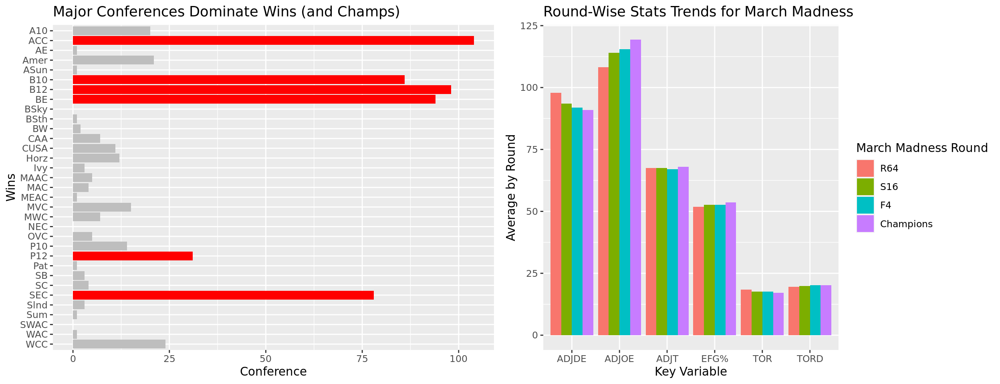
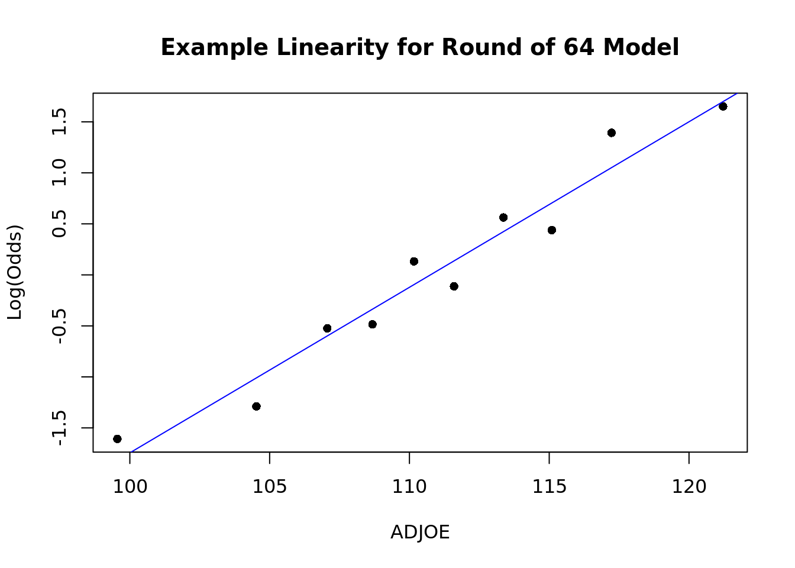

library(tidyverse)
library(tidymodels)
library(Stat2Data)
library(caret)
library(leaps)
library(MASS)
library(gridExtra)Final Project - Predicting March Madness
Introduction and Data
Motivation
Duke is synonymous with basketball. As Duke students who love Duke Basketball and March Madness, we are interested in performing a statistical analysis on the most thrilling tournament in sports. While watching the 2023 March Madness tournament and the many upsets that came with it, we were motivated to see if we could use statistical methods to predict March Madness winners. Upon scouring sites such as FiveThirtyEight and the KenPom rankings, we were inspired to create models of our own to predict tournament success.
Fundamental Research Question: What variables are the most important to March Madness success and which outliers over the past 15 years have existed that bring “Madness” to “March?
Packages
Data
Data was found from the Sports Reference college basketball team stats website and Bart Torvik analytics website, with these general and deeper stats being taken going back to 2008 (excluding the cancelled March Madness of 2020). Both of these sources allow for easy copy + pasting of CSV files with the annual stats for each team and their tournament performance. From here, the data was cleaned in Excel to separate the year and result of each team then joined for all of this data together. With the nature of March Madness being over time, the data most definitely violates expectations of independence, with similar players, coaches, and more between years, but there would not be a reasonable way to complete such analysis without this independence.
Key Variables
march_madness - Our key response variable that states the round each team was able to make it to in their tournament. Our overall goal is to predict this variable for teams in the 2023 March Madness Tournament
ADJOE/ADJDE - Points scored per 100 possessions on offense/defense, adjusted for opponent strength and game location
TOR/TORD - Turnovers committed/forced per game on offense/defense
ADJT - Estimate possessions per game a team would have against the average tempo
EFG% - Field goal percentage adjusted for value of baskets scored
Description of Data Cleaning
For further cleaning, the non-March Madness teams added in the join were removed and simple variable names and values were cleaned up to be easier to work with. First we joined our original cbb dataset with background, both of which we got from Bart Torvik’s analytics website. The latter dataset contained details about each team’s performance in the tournament for the relevant years. The observations of teams that did not make the Round of 64 for their tournament were then removed to focus on further prediction.
We also abbreviated each of the outcomes in the march_madness variable. Then, we joined the cbb and the sportsreference datasets by team and year to aggregate all of the statistics and data that were interested in analyzing. For the round each team made it to, the values were shortened to a shorter form (i.e. F4 instead of Final Four). Each round was split up to its own variable and dataset which showed the success of each team in each round (e.g. win or loss in the Round of 32). Finally, we created the mm_WINS variable which tracks how many wins a given team had in a tournament year. We deduced this from the outcome from the march_madness variable, and applied it to our new variable. This helped us with our EDA as we were able to see how many wins each conference/team had in any given tournament.
Exploratory Data Analysis

Methodology
Round-by-Round Logistic Regression
The following is an example of the regression that was ran on all of the Round of 64 teams to create a regression that predicts winners (round_64 = TRUE) against losers (round_64 = FALSE) for the round. We put every variable from our dataset into the logisitic regression, with the interaction terms based on variables that would be considered to be differential statistics (i.e. 3P% and 3P%D interact for 3-Pointer % Differential). The number of variables was then reduced to those considered appropriate using stepAIC works to attempt to limit the overfitting with the data. The stepAIC function was implemented starting at the upper model and going both directions. There is a potential problem in using glm fits with a variable scale, as in that case the deviance is not simply related to the maximized log-likelihood.
We chose to do a logistic model because our outcome variable is whether they had won in the respective round or not (binary response variable). For example round_64 measures whether the team won in the Round of 64. The outcome is either a win or loss, so a logistic regression model serves our analysis best. We did this for the first three rounds of the tournament – we avoided Elite Eight to the National Championship game as there simply was not enough data to create a viable predictive model (Northern Kentucky was predicted to win in the Final Four).
round_64 <- na.omit(round_64)
round_64_max <- glm(round_64 ~ G.x + ADJOE + ADJDE + `EFG%` + `EFGD%` + TOR +
TORD + ORB + DRB + FTR + FTRD + `2P%` + `2P%D` + `3P%` +
`3P%D` + `3PR` + `3PRD` + `ADJ T` +`Conf. W-L%` + `Home W-L%` +
`Away W-L%` + `AVG PPG` + `AVG DPPG` + `AVG PD` +
`AST/TOV` + `PF/G` + ADJOE*ADJDE + `EFG%`*`EFGD%` + TOR*TORD +
ORB*DRB + FTR*FTRD + `2P%`*`2P%D` + `3P%`*`3P%D` + `3PR`*`3PRD` +
`2P%`*`3P%` + `2P%D`*`3P%D` + `AVG PPG`*`AVG DPPG`,
data = round_64,
family = "binomial")
round_64_min <- glm(round_64 ~ 1,
data = round_64,
family = "binomial")
round_64_model <- stepAIC(round_64_max,
scope = list(lower = round_64_min, upper = round_64_max),
data = round_64, direction = "both")Assumptions
As discussed earlier, the independence assumption for the data cannot be well-assumed. There is also a linearity assumption that is based on there being a linear relationship between the log-odds of the response and the predictors.

As can be seen above with just a few of the variables from each of the model, the linearity assumption does seem like it can be quite well assumed. We checked most of the variables and saw similar linearity assumptions to be well-assumed, but for the sake of space are just showing this small subset of these three continuous variables.
Overall Ordinal Regression
We chose to complete an ordinal regression model as each of the progressing rounds of the tournament are in an ordinal progession. The variables used in the model were those that consistently showed up in the Round of 64, Round of 32, and Sweet Sixteen models after running the StepAIC function, meaning they can confidently be thought as meaningful predictors of success in the rounds of March Madness.
Call:
polr(formula = march_madness ~ ADJOE + ADJDE + TORD + FTRD +
`2P%D` + `3P%D` + `AVG PPG` + `AVG DPPG` + `PF/G`, data = cbb)
Coefficients:
Value Std. Error t value
ADJOE 0.165964 0.01579 10.5136
ADJDE -0.228849 0.02414 -9.4790
TORD 0.035456 0.03449 1.0279
FTRD 0.067047 0.02809 2.3865
`2P%D` 0.035198 0.03971 0.8864
`3P%D` 0.023942 0.04088 0.5857
`AVG PPG` 0.052121 0.02645 1.9706
`AVG DPPG` -0.008595 0.03136 -0.2741
`PF/G` -0.311339 0.09341 -3.3329
Intercepts:
Value Std. Error t value
R64|R32 -0.2630 0.0010 -258.8674
R32|S16 1.3164 0.0963 13.6647
S16|E8 2.4566 0.1334 18.4125
E8|F4 3.3948 0.1726 19.6637
F4|2ND 4.2343 0.2247 18.8467
2ND|Champions 5.0224 0.2976 16.8770
Residual Deviance: 2011.75
AIC: 2041.75 The assumption required for an ordinal regression is the proportional odds assumption, which applied to this situation is the idea that the same conditional relationship with odds of making it from one round to the next no matter which round that is. This is reasonable due to the fact the proportion of teams that makes it on from one round to the next stays at a constant 50 percent, no matter which round they are participating in.
Results
For checking the results, we got this year’s data from Sports Reference and Bart Torovik’s website and joined and cleaned then in the same way as done for the other years. The predict function was then called on these, leaving the following log-odds for the rounds and ordinal regression.
Round of 64 Predictions
# A tibble: 64 × 37
predi…¹ prob rank RK TEAM G.x WINS LOSSES ADJOE ADJDE `EFG%` `EFGD%`
<dbl> <dbl> <int> <dbl> <chr> <dbl> <dbl> <dbl> <dbl> <dbl> <dbl> <dbl>
1 3.59 0.973 1 1 Hous… 34 31 3 117. 88 52.7 42.5
2 3.41 0.968 3 3 UCLA 34 29 5 113. 87.4 50.9 46.8
3 2.50 0.924 12 12 San … 32 26 6 111. 90.1 50.1 47.5
4 2.48 0.923 2 2 Alab… 34 29 5 115. 88.3 52.7 41.5
5 2.24 0.903 6 6 Purd… 34 29 5 118. 92.6 52.2 47.2
6 2.23 0.903 11 11 Marq… 34 28 6 119. 96.1 56 51.1
7 2.08 0.889 13 13 Kans… 34 27 7 113. 91.5 52.4 47.1
8 1.96 0.877 9 9 Texas 34 26 8 115. 91.6 52.7 47.8
9 1.89 0.868 4 4 Tenn… 33 23 10 111. 86.2 50.3 42.4
10 1.74 0.850 5 5 Conn… 33 25 8 119. 92.5 53.5 45.5
# … with 54 more rows, 25 more variables: TOR <dbl>, TORD <dbl>, ORB <dbl>,
# DRB <dbl>, FTR <dbl>, FTRD <dbl>, `2P%` <dbl>, `2P%D` <dbl>, `3P%` <dbl>,
# `3P%D` <dbl>, `3PR` <dbl>, `3PRD` <dbl>, `ADJ T` <dbl>, G.y <dbl>,
# `Overall W-L%` <dbl>, `Overall SRS` <dbl>, `Overall SOS` <dbl>,
# `Conf. W-L%` <dbl>, `Home W-L%` <dbl>, `Away W-L%` <dbl>, `AVG PPG` <dbl>,
# `AVG DPPG` <dbl>, `AVG PD` <dbl>, `AST/TOV` <dbl>, `PF/G` <dbl>, and
# abbreviated variable name ¹`predict(round_64_model, \`2023stats\`)`Round of 32 Predictions
# A tibble: 64 × 37
predi…¹ prob rank RK TEAM G.x WINS LOSSES ADJOE ADJDE `EFG%` `EFGD%`
<dbl> <dbl> <int> <dbl> <chr> <dbl> <dbl> <dbl> <dbl> <dbl> <dbl> <dbl>
1 2.18 0.899 1 1 Hous… 34 31 3 117. 88 52.7 42.5
2 1.50 0.817 3 3 UCLA 34 29 5 113. 87.4 50.9 46.8
3 1.27 0.780 2 2 Alab… 34 29 5 115. 88.3 52.7 41.5
4 1.03 0.736 10 10 Gonz… 32 27 5 123. 98.6 58.5 51.7
5 1.00 0.731 12 12 San … 32 26 6 111. 90.1 50.1 47.5
6 0.910 0.713 6 6 Purd… 34 29 5 118. 92.6 52.2 47.2
7 0.880 0.707 38 42 Penn… 35 22 13 115. 99.9 55.5 49.2
8 0.853 0.701 15 15 Bayl… 32 22 10 121. 99.5 53.1 51.4
9 0.848 0.700 4 4 Tenn… 33 23 10 111. 86.2 50.3 42.4
10 0.779 0.686 14 14 Crei… 33 21 12 114. 92.8 54.3 47.3
# … with 54 more rows, 25 more variables: TOR <dbl>, TORD <dbl>, ORB <dbl>,
# DRB <dbl>, FTR <dbl>, FTRD <dbl>, `2P%` <dbl>, `2P%D` <dbl>, `3P%` <dbl>,
# `3P%D` <dbl>, `3PR` <dbl>, `3PRD` <dbl>, `ADJ T` <dbl>, G.y <dbl>,
# `Overall W-L%` <dbl>, `Overall SRS` <dbl>, `Overall SOS` <dbl>,
# `Conf. W-L%` <dbl>, `Home W-L%` <dbl>, `Away W-L%` <dbl>, `AVG PPG` <dbl>,
# `AVG DPPG` <dbl>, `AVG PD` <dbl>, `AST/TOV` <dbl>, `PF/G` <dbl>, and
# abbreviated variable name ¹`predict(round_32_model, \`2023stats\`)`Sweet Sixteen Predictions
# A tibble: 64 × 37
predi…¹ prob rank RK TEAM G.x WINS LOSSES ADJOE ADJDE `EFG%` `EFGD%`
<dbl> <dbl> <int> <dbl> <chr> <dbl> <dbl> <dbl> <dbl> <dbl> <dbl> <dbl>
1 2.03 0.884 1 1 Hous… 34 31 3 117. 88 52.7 42.5
2 2.01 0.882 6 6 Purd… 34 29 5 118. 92.6 52.2 47.2
3 1.09 0.749 22 22 Texa… 34 25 9 113. 94.8 49 47.9
4 1.03 0.738 5 5 Conn… 33 25 8 119. 92.5 53.5 45.5
5 0.961 0.723 38 42 Penn… 35 22 13 115. 99.9 55.5 49.2
6 0.674 0.662 23 23 Aubu… 32 20 12 111. 93.2 49.6 45.6
7 0.624 0.651 13 13 Kans… 34 27 7 113. 91.5 52.4 47.1
8 0.532 0.630 2 2 Alab… 34 29 5 115. 88.3 52.7 41.5
9 0.467 0.615 26 26 TCU 33 21 12 110. 93.4 50.2 47.8
10 0.449 0.610 12 12 San … 32 26 6 111. 90.1 50.1 47.5
# … with 54 more rows, 25 more variables: TOR <dbl>, TORD <dbl>, ORB <dbl>,
# DRB <dbl>, FTR <dbl>, FTRD <dbl>, `2P%` <dbl>, `2P%D` <dbl>, `3P%` <dbl>,
# `3P%D` <dbl>, `3PR` <dbl>, `3PRD` <dbl>, `ADJ T` <dbl>, G.y <dbl>,
# `Overall W-L%` <dbl>, `Overall SRS` <dbl>, `Overall SOS` <dbl>,
# `Conf. W-L%` <dbl>, `Home W-L%` <dbl>, `Away W-L%` <dbl>, `AVG PPG` <dbl>,
# `AVG DPPG` <dbl>, `AVG PD` <dbl>, `AST/TOV` <dbl>, `PF/G` <dbl>, and
# abbreviated variable name ¹`predict(sweet_sixteen_model, \`2023stats\`)`Ordinal Regression Predictions
TEAM R64 R32 S16 E8 F4 2ND Champions
1 Houston 0.040 0.127 0.218 0.230 0.172 0.103 0.110
2 Alabama 0.120 0.278 0.276 0.167 0.083 0.040 0.036
3 UCLA 0.070 0.198 0.266 0.211 0.126 0.066 0.063
4 Tennessee 0.089 0.233 0.276 0.194 0.106 0.053 0.049
5 Connecticut 0.089 0.232 0.276 0.194 0.107 0.053 0.049
6 Purdue 0.119 0.277 0.276 0.167 0.084 0.040 0.036
7 Arizona 0.193 0.344 0.247 0.119 0.053 0.024 0.021
8 Saint Mary's 0.176 0.333 0.256 0.128 0.058 0.026 0.023
9 Texas 0.133 0.293 0.273 0.157 0.076 0.036 0.032
10 Gonzaga 0.136 0.297 0.272 0.154 0.075 0.035 0.031The slope coefficient for average points per game for the Sweet Sixteen logistic model is 1.036. Holding all other variables constant, for every one point increase in average points per game, the odds of winning in the Sweet Sixteen is associated with a e^1.036 = 2.818 multiplicative factor on the odds of winning in this round.
The slope coefficient for average points per game for the ordinal regression model is 0.052. For every one point increase in average points per game, the odds of moving onto the next round (the odds of winning in a given round) is predicted to be multiplied by e^0.052 = 1.054 - holding all other predictors in the model constant.
Predictive Power via 2023 March Madness Predictions
The ordinal model was able to predict 23/32 and 12/16 of the teams to make it on to the Round of 32 and Sweet Sixteen, respectively. For comparison, this bracket predicted around the average score of my brackets, which were likely better than average since I grew up a UConn fan and often had them going far. The successes in the earlier rounds fell off onto later rounds, of course due to chance, but possibly also due to quite low levels of data for prediction of success.
Key Results
An unsurprising key result found was the randomness of the tournament, with a simple wrong decision in the earlier rounds multiplying into the lack of success for point totals in the later rounds. Based on the variables that ended up being chosen following the StepAIC function, summarizing variables that consider games played and strength of opponents over the season are stronger predictors than some of the overall percentage stats about schedule success (e.g. Home/Away Win %). From the variables that consistently showed up in the logisitic models and were thus used in the ordinal model, there was a higher emphasis on defensive stats compared to those of the offense.
Discussion
The variables that we noted to be most important were summary statistics about a team’s offensive and defensive capabilities, specifically around shooting and when accounting into the strength of opponents. This led into ADJOE, ADJDE, and PPG Scored and Allowed being important variables for the model. Based on the predictions for this year, the suprise team was FAU, who was able to make the Final Four despite being predicted to lose in the Round of 64 against Memphis by both the ordinal and Round of 64 logistic regression.
#need to find Cook's distance equivalent for polr models
#influence.measures(mmb_ord_model)Among the issues of our analysis is the glaring lack of independence between observations that would be required for many of the regressions used for prediction. As STA 210 students, our statistical toolkit does not yet have the necessary knowledge to deal with these issues of time-related data, so hopefully as it expands in further classes we will be able to come back and solve some of the issues with the violations. Possible issues with the model could include a lack of importance placed on the recent due to the stats used being from the season as a whole, thus injuries and general performance boosts lack as much influence as might be needed. There is also a small subset of data that is available to us, such as not much being known about the types of shots each team is taking, which could be important to the micro-level analysis of teams.
Ideas for Future Work
There are quite a few limitations to the model that can be worked towards and improved for a better analysis. The much repeated violated assumption has been the independence between observations, stemming from similarities between teams and years. There are various ways of dealing with this, which can be further dealt with after adding to our statistical toolkit in courses like STA 344 (Introduction to the Statistical Modeling of Spatial and Time Series Data). The complexities of the real world and March Madness also means that although there is a lot of information being fed into the regression, there are likely still key pieces of data that are not included. Of course, this data could simply be added, or a new more novel strategy could be the use of something like machine learning for a more nuanced prediction with the factors that are found to be important. An interesting outcome which could come from this is its use in areas like sports betting to beat the odds makers and quantify success in yet another way.